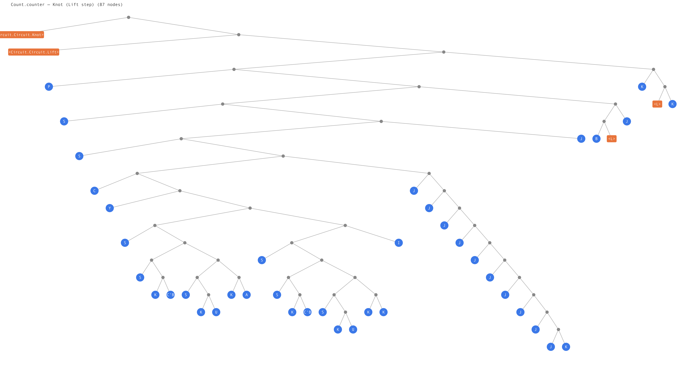
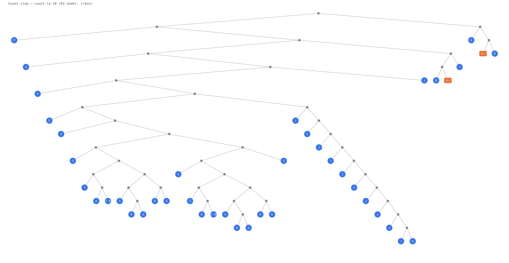
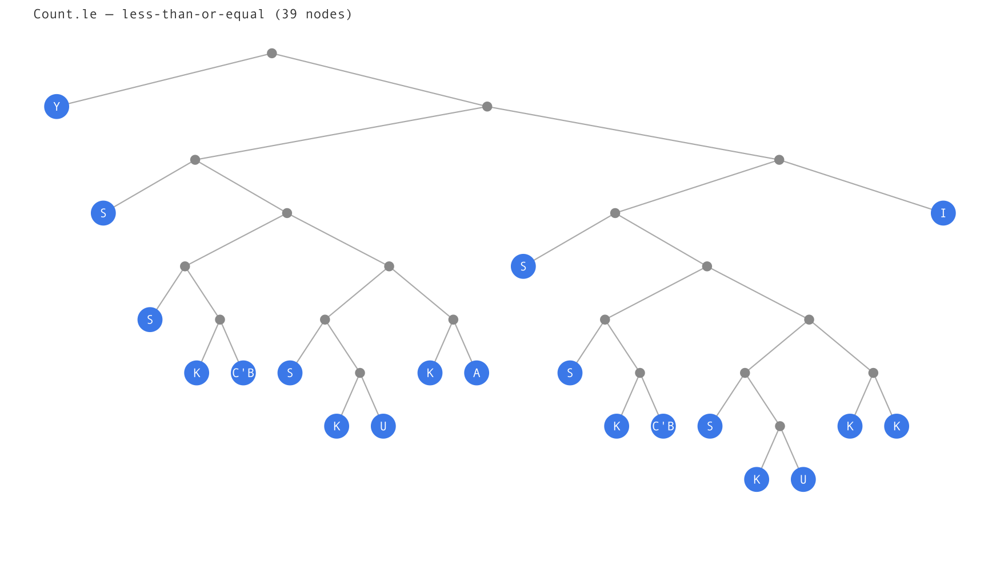
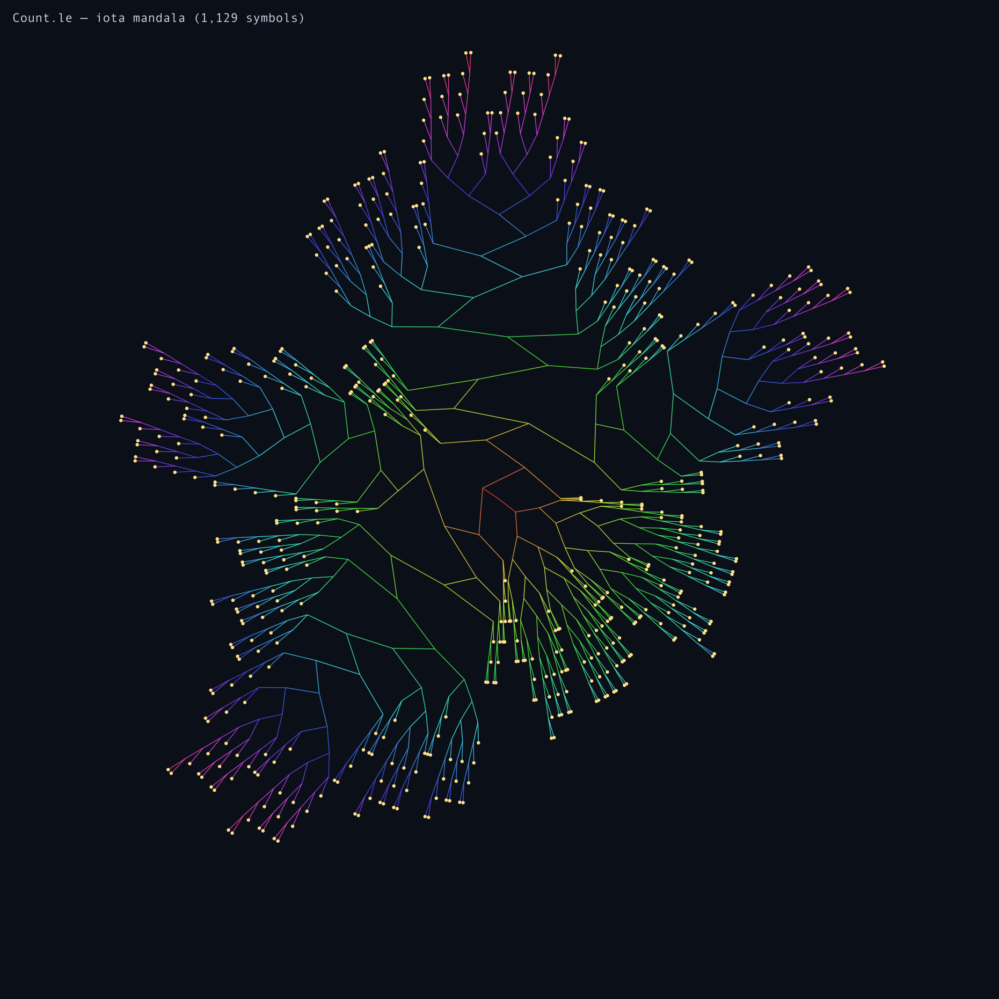

Compiling Circuit programs through MicroHs to combinator trees and iota mandalas.
Pipeline: Circuit.hs → gmhs -ddump-combinator → iota → treedraw.py → PNG
Knot (Lift step)
step :: Either Nat Nat → Either Nat Nat
step (Left n) = if n ≤ 10 then Left (n+1) else Right n
step (Right n) = Left Z
le :: Nat → Nat → Bool — Peano less-than-or-equal
Three opaque boxes (Knot, Lift, L) wrapping 83 nodes of pure combinator computation.

The complete expression Knot (Lift step).
The Knot and Lift boxes
are the Circuit GADT constructors — opaque data, not combinators.

The step function stripped of its Circuit wrapper.
One L box (Either's Left injection) — everything
else is pure combinators: S, K, I,
C, B, Y.

Peano comparison: le Z _ = T; le (S _) Z = F; le (S m) (S n) = le m n.
Recursive via Y fixpoint. Every leaf is a pure combinator — no primitives.

The same le function compiled to Barker's Iota:
ι = λf.f S K, the single-combinator universal basis.
Every edge is 0 (apply) or 1 (ι).
Radial layout — root at center, depth coded by edge colour.
This is the computation with everything stripped away: no data types,
no pattern matching, no control flow. Just application and one combinator.
The Circuit GADT (Lift, Compose,
Knot) is a wrapper — 2 nodes of overhead that let you
inspect, meter, and transform before closing. The real computation lives inside
Lift as a base-arrow function. When that function is primitive-free,
it compiles to pure combinators with a measurable iota size.
reify costs more than encode (dictionary passing adds
~6 nodes per circuit). encode via Hyper is tighter but still opaque
to MicroHs — the combinator renderer can't inline through it. For now, the best
view is to dump the step function directly, skipping the Circuit wrapper.
Generated by circuits-iota · MicroHs (augustss) · iota-render (Tritlo) · June 2026